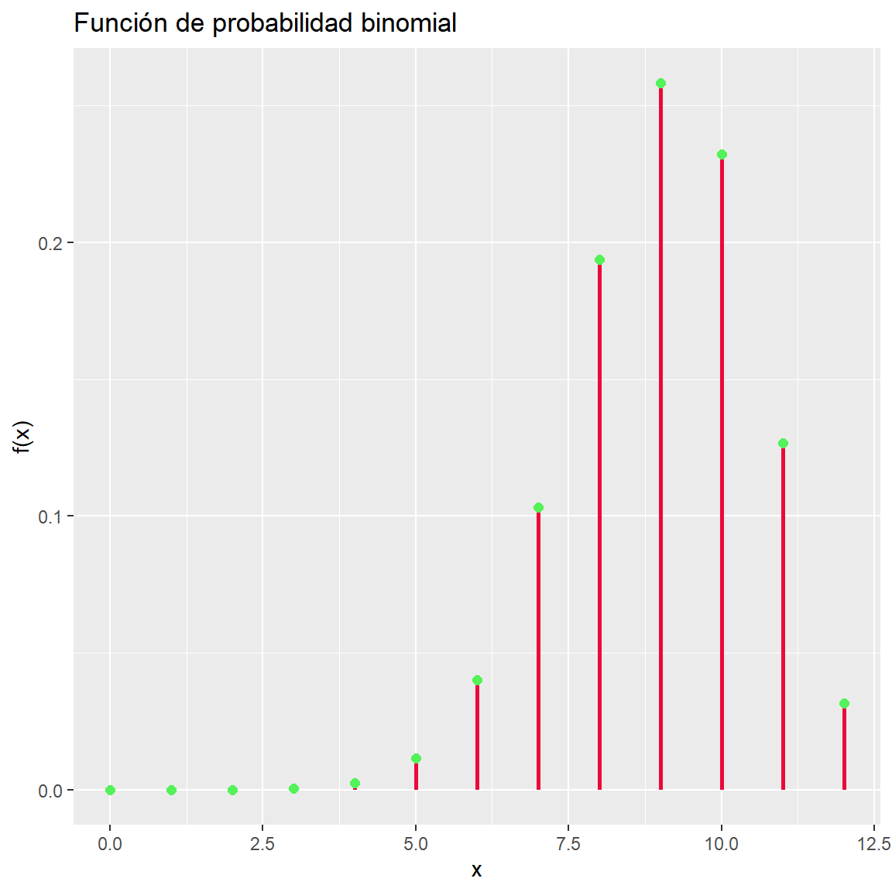
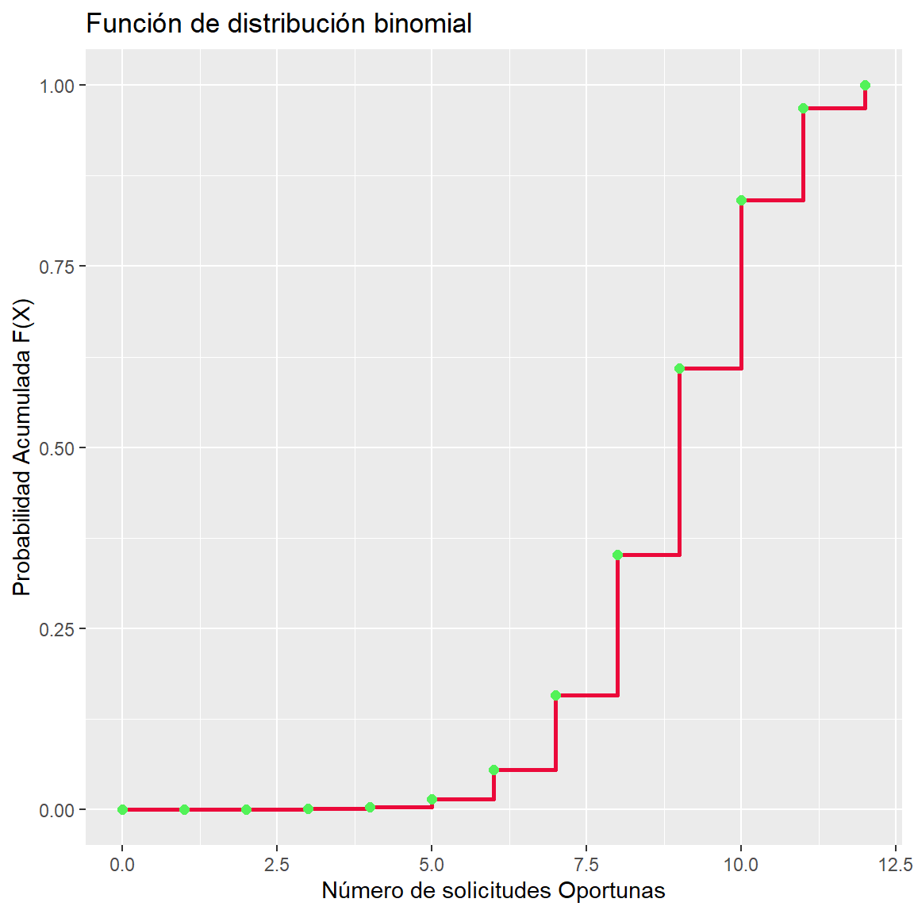
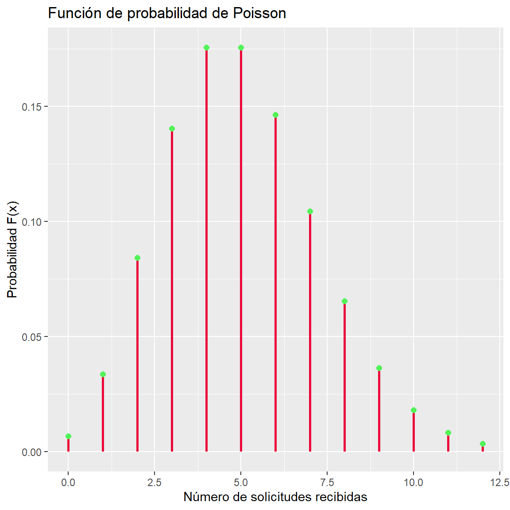
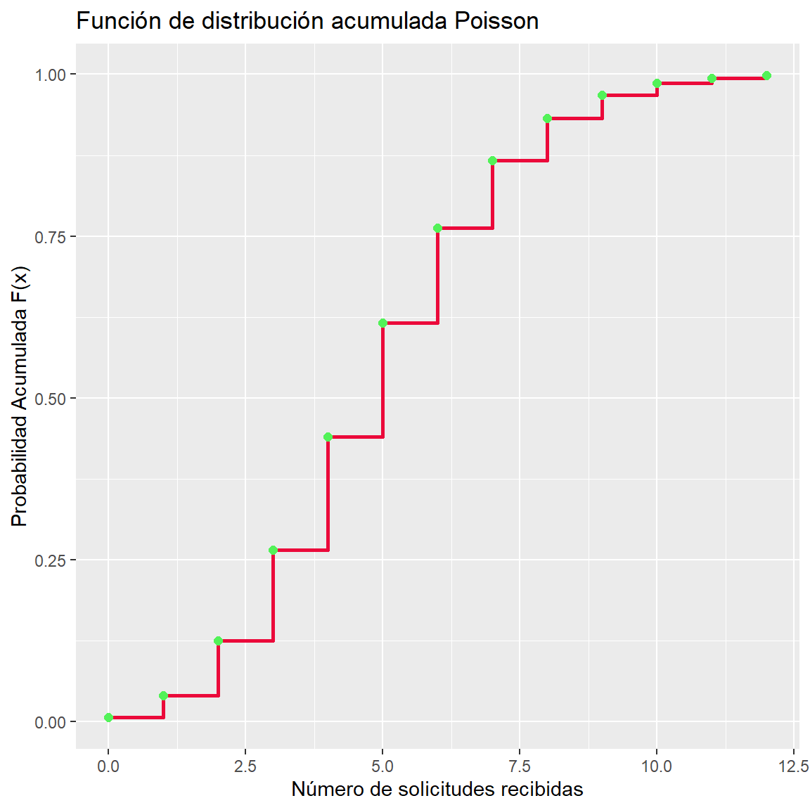
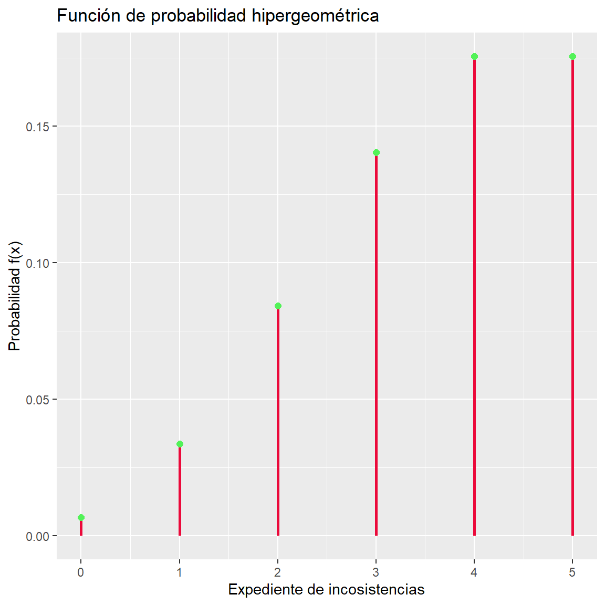
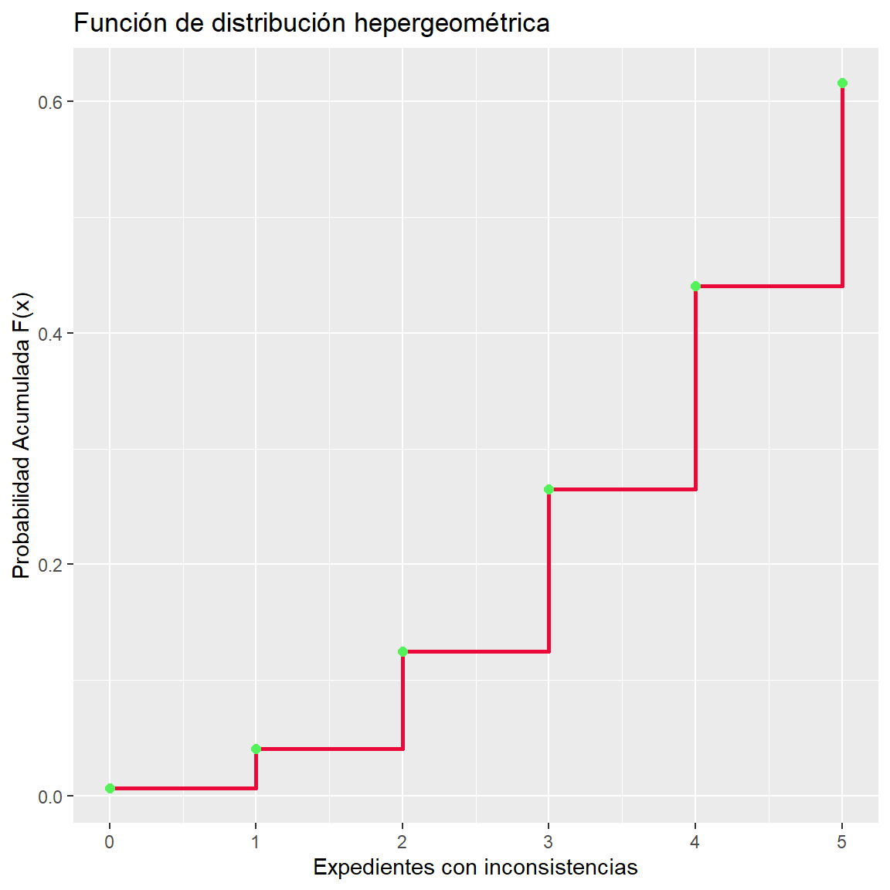

Ver código
library(tidyverse)
library(kableExtra)
library(dplyr)library(tidyverse)
library(kableExtra)
library(dplyr)La distribución binomial es un modelo de probabilidad discreta que describe el número de éxitos en una secuencia de n ensayos de Bernoulli independientes. Un ensayo de Bernoulli es un experimento aleatorio con solo dos posibles resultados: éxito o fracaso.
• Características de identificación:
Para que un experimento pueda ser modelado por una distribución binomial, debe cumplir con las siguientes condiciones:
Número fijo de ensayos (n): El experimento se repite un número predeterminado de veces. Por ejemplo, lanzar una moneda 10 veces o examinar 50 productos de una línea de producción.
Dos resultados posibles: Cada ensayo solo puede tener dos resultados, uno de los cuales se considera “éxito” y el otro “fracaso”.
Probabilidad de éxito constante (p): La probabilidad de que ocurra un éxito es la misma en cada ensayo. Por eje*mplo, la probabilidad de que una moneda caiga cara es siempre 0.5.
Ensayos independientes: El resultado de un ensayo no afecta el resultado de los otros ensayos.
• Fórmula o expresión matemática: La probabilidad de obtener exactamente k éxitos en n ensayos es:
P(X = k) = \binom{n}{k} p^k (1-p)^{n-k}
Ejercicio 1
Una alcaldía municipal está realizando un seguimiento a la gestión de su oficina de atención al ciudadano, con el propósito de evaluar el cumplimiento de los tiempos establecidos para responder las solicitudes de la comunidad.
De acuerdo con los registros administrativos, el 75 % de las solicitudes ciudadanas son respondidas dentro del plazo establecido por la entidad.
La oficina de control interno selecciona aleatoriamente una muestra de 12 solicitudes para evaluar su cumplimiento. Se supone que los resultados son independientes y que la probabilidad de responder oportunamente permanece constante.
Sea X la variable aleatoria que representa el número de solicitudes respondidas dentro del plazo establecido.
Determine:
¿Cuál es la probabilidad de que exactamente 9 solicitudes sean respondidas oportunamente?
¿Cuál es la probabilidad de que más de 9 solicitudes sean respondidas oportunamente?
¿Cuál es la probabilidad de que menos de 8 solicitudes sean respondidas oportunamente?
n <- 12
p <- 0.75
x <- 0:n
fx <- round(dbinom(x, n, p),4)
Fx <- round(cumsum(fx),4)
df = data.frame(x, fx, Fx)
Form.Basic <- c("striped", "bordered", "hover", "condensed", "responsive")
kable(df, align = "c") %>%
kable_styling("striped", full_width = F) %>%
column_spec(1, bold = T) %>%
row_spec(0:13, bold = T, color = "#0b0f0b", background = "#4af7be")| x | fx | Fx |
|---|---|---|
| 0 | 0.0000 | 0.0000 |
| 1 | 0.0000 | 0.0000 |
| 2 | 0.0000 | 0.0000 |
| 3 | 0.0004 | 0.0004 |
| 4 | 0.0024 | 0.0028 |
| 5 | 0.0115 | 0.0143 |
| 6 | 0.0401 | 0.0544 |
| 7 | 0.1032 | 0.1576 |
| 8 | 0.1936 | 0.3512 |
| 9 | 0.2581 | 0.6093 |
| 10 | 0.2323 | 0.8416 |
| 11 | 0.1267 | 0.9683 |
| 12 | 0.0317 | 1.0000 |
Graficas
df_1 <- data.frame(x = x, fx = fx, xend = x, fxend = 0)
ggplot(df_1, aes(x = x, y = fx)) +
geom_segment(aes(xend = xend, yend = fxend), color = "#eb093a", size = 1) +
geom_point(color = "#52f258", size = 2) +
labs(title = "Función de probabilidad binomial",
x = "x",
y = "f(x)")
df_2 <- data.frame(x = x, Fx = Fx)
ggplot(df_2, aes(x = x, y = Fx)) +
geom_step(color = "#eb093a", size = 1) +
geom_point(color = "#52f258", size = 2) +
labs(title = "Función de distribución binomial",
x = "Número de solicitudes Oportunas",
y = "Probabilidad Acumulada F(X)") 
Solución Incisos
Exactamente 9 solicitudes respondidas oportunamente.
# Inciso 1: Exactamente 8 solicitudes
n <- 12
p <- 0.75
P1 <- dbinom(9, size = n, prob = p)
P1[1] 0.2581036# Resultado en porcentaje
P1 * 100[1] 25.81036Mas de 9 solicitudes respondidas oportunamente.
# Inciso 2: Más de 8 solicitudes
n <- 12
p <- 0.75
P2 <- 1 - pbinom(9, size = n, prob = p)
P2[1] 0.390675# Resultado en porcentaje
P2 * 100[1] 39.0675Menos de 8 solicitudes respondidas oportunamente.
# Inciso 3: Menos de 7 solicitudes
n <- 12
p <- 0.75
P3 <- pbinom(7, size = n, prob = p)
P3[1] 0.1576437# Resultado en porcentaje
P3 * 100 [1] 15.76437La distribución de Poisson es una distribución de probabilidad discreta que expresa la probabilidad de que un número dado de eventos ocurra en un intervalo fijo de tiempo o espacio, si estos eventos ocurren con una tasa promedio constante y son independientes del tiempo transcurrido desde el último evento.
Definición y Origen
Esta distribución fue descubierta por el matemático francés Siméon Denis Poisson en 1837. Su trabajo se centró en la teoría de la probabilidad, y esta distribución se utiliza para modelar la ocurrencia de eventos raros en un intervalo.
Características Clave
La distribución de Poisson se identifica por las siguientes características:
Eventos discretos: El número de eventos es un conteo de eventos que no pueden ser fraccionados (por ejemplo, no puedes tener 1.5 llamadas).
Independencia: La ocurrencia de un evento no afecta la probabilidad de que ocurra otro.
Tasa constante: El número promedio de eventos por unidad de tiempo o espacio (λ) es constante.
Aleatoriedad: La probabilidad de que ocurra más de un evento en un intervalo muy pequeño es casi nula.
Fórmula y Expresión Matemática
La fórmula para calcular la probabilidad de que ocurran exactamente k eventos en un intervalo, dado un promedio de λ eventos, es:
P(X=k)=\frac{\lambda^k e^{-\lambda}}{k!}
Ejercicio 2
Una alcaldía municipal cuenta con una oficina de gestión documental encargada de recibir y registrar las solicitudes de información presentadas por los ciudadanos.
De acuerdo con los registros de la entidad, se reciben en promedio 4 solicitudes de información por hora.
Se supone que las solicitudes llegan de manera independiente y que la tasa promedio de recepción permanece constante durante el periodo analizado.
Sea X la variable aleatoria que representa el número de solicitudes de información recibidas durante una hora.
Determine:
¿Cuál es la probabilidad de recibir exactamente 3 solicitudes durante una hora?
¿Cuál es la probabilidad de recibir más de 5 solicitudes durante una hora?
¿Cuál es la probabilidad de recibir entre 2 y 6 solicitudes durante una hora, inclusive?
Por tanto: X\sim Poisson(\lambda=5)
Tabla de Distribucion
n <- 12
lambda <- 4
x <- 0:n
fx <- round(dpois(x, lambda = 3), 4)
Fx <- round(cumsum(fx), 4)
df <- data.frame(x, fx, Fx)
Form.Basic <- c("striped", "bordered", "hover", "condensed", "responsive")
kable(df, align = "c") %>%
kable_styling("striped", full_width = F) %>%
column_spec(1, bold = T) %>%
row_spec(0:13, bold = T, color = "#0b0f0b", background = "#4af7be")| x | fx | Fx |
|---|---|---|
| 0 | 0.0498 | 0.0498 |
| 1 | 0.1494 | 0.1992 |
| 2 | 0.2240 | 0.4232 |
| 3 | 0.2240 | 0.6472 |
| 4 | 0.1680 | 0.8152 |
| 5 | 0.1008 | 0.9160 |
| 6 | 0.0504 | 0.9664 |
| 7 | 0.0216 | 0.9880 |
| 8 | 0.0081 | 0.9961 |
| 9 | 0.0027 | 0.9988 |
| 10 | 0.0008 | 0.9996 |
| 11 | 0.0002 | 0.9998 |
| 12 | 0.0001 | 0.9999 |
Graficas
x <- 0:n
lambda <- 5
probabilidad <- dpois(x, lambda)
df_1 <- data.frame(numero_solicitudes = x, probabilidad = probabilidad,
numero_solicitudes_end = x, probabilidad_end = 0)
ggplot(df_1, aes(x = numero_solicitudes, y = probabilidad)) +
geom_segment(aes(xend = numero_solicitudes_end, yend = probabilidad_end), color = "#eb093a", size = 1) +
geom_point(color = "#52f258", size = 2) +
labs(title = "Función de probabilidad de Poisson",
x = "Número de solicitudes recibidas",
y = "Probabilidad F(x)")
x <- 0:n
lambda <- 5
prob_acumulada <- ppois(q = x, lambda = lambda)
df_2 <- data.frame(numero_solicitudes = x, probabilidad_acumulada = prob_acumulada)
ggplot(df_2, aes(x = numero_solicitudes, y = probabilidad_acumulada)) +
geom_step(color = "#eb093a", size = 1) +
geom_point(color = "#52f258", size = 2) +
labs(title = "Función de distribución acumulada Poisson",
x = "Número de solicitudes recibidas",
y = "Probabilidad Acumulada F(x)")
Solucion Incisos
Exactamente 3 solicitudes recibidas durante 1 hora.
# Inciso 1: Exactamente 3 solicitudes
lambda <- 5
P1 <- dpois(3, lambda = lambda)
P1[1] 0.1403739# Resultado porcentual
P1 * 100[1] 14.03739Mas de 5 solicitudes recibidas durante 1 hora.
# Inciso 2: Más de 5 solicitudes
lambda <- 5
P2 <- 1 - ppois(5, lambda = lambda)
P2[1] 0.3840393# Resultado porcentual
P2 * 100[1] 38.40393Entre 2 y 6 solicitudes recibidas durante una hora, inclusive.
# Inciso 3: Entre 2 y 6 solicitudes inclusive
lambda <- 4
P3 <- ppois(6, lambda = lambda) -
ppois(1, lambda = lambda)
P3[1] 0.7977478# Resultado porcentual
P3 * 100[1] 79.77478La distribución hipergeométrica es un modelo de probabilidad discreta que permite calcular la probabilidad de obtener un número determinado de éxitos al seleccionar una muestra de una población finita, cuando la selección se realiza sin reemplazo.
A diferencia de la distribución binomial, en la distribución hipergeométrica la probabilidad de éxito puede cambiar en cada selección, debido a que los elementos seleccionados no se devuelven a la población.
Características de identificacion
Para que un experimento pueda representarse mediante una distribución hipergeométrica, debe cumplir las siguientes condiciones:
Población finita (N):** existe una cantidad total y limitada de elementos.
Éxitos en la población (K): se conoce cuántos elementos de la población poseen la característica que se desea estudiar.
Tamaño de la muestra (n): se establece previamente cuántos elementos serán seleccionados.
Selección sin reemplazo: los elementos seleccionados no se devuelven a la población.
Dos resultados posibles:** cada elemento se clasifica como éxito o fracaso.
Fórmula y Expresión Matemática
La probabilidad de obtener exactamente x éxitos en una muestra de tamaño n se calcula mediante:
P(X=x)=\frac{\binom{K}{x}\binom{N-K}{n-x}}{\binom{N}{n}}
Donde:
Ejercicio 3
La oficina de control interno de una alcaldía municipal está realizando una auditoría a los expedientes relacionados con los contratos de prestación de servicios de la entidad.
Durante la revisión se identificó que, de un total de 20 expedientes, 6 presentan inconsistencias en su documentación y los otros 14 se encuentran correctamente diligenciados.
Para realizar el proceso de auditoría, se seleccionan aleatoriamente 5 expedientes, sin reemplazo, con el propósito de verificar la cantidad de documentos que presentan inconsistencias.
Sea X la variable aleatoria que representa el número de expedientes con inconsistencias encontrados en la muestra seleccionada.
Determine:
¿Cuál es la probabilidad de que exactamente 2 expedientes presenten inconsistencias?
¿Cuál es la probabilidad de que al menos 2 expedientes presenten inconsistencias?
¿Cuál es la probabilidad de que menos de 2 expedientes presenten inconsistencias?
Por tanto: X\sim Poisson(\lambda=5)
Tabla de Distribucion
N <- 20
K <- 4
n <- 5
x <- 0:5
fx <- round(dhyper(x, m = 6, n = 14, k = 5), 4)
Fx <- round(phyper(x, m = 6, n = 14, k = 5), 4)
df <- data.frame(x, fx, Fx)
Form.Basic <- c("striped", "bordered", "hover", "condensed", "responsive")
kable(df, align = "c") %>%
kable_styling("striped", full_width = F) %>%
column_spec(1, bold = T) %>%
row_spec(0:5, bold = T, color = "#0b0f0b", background = "#4af7be")| x | fx | Fx |
|---|---|---|
| 0 | 0.1291 | 0.1291 |
| 1 | 0.3874 | 0.5165 |
| 2 | 0.3522 | 0.8687 |
| 3 | 0.1174 | 0.9861 |
| 4 | 0.0135 | 0.9996 |
| 5 | 0.0004 | 1.0000 |
Graficas
x <- 0:n
lambda <- 5
probabilidad <- dpois(x, lambda)
df_1 <- data.frame(numero_solicitudes = x, probabilidad = probabilidad,
numero_solicitudes_end = x, probabilidad_end = 0)
ggplot(df_1, aes(x = numero_solicitudes, y = probabilidad)) +
geom_segment(aes(xend = numero_solicitudes_end, yend = probabilidad_end), color = "#eb093a", size = 1) +
geom_point(color = "#52f258", size = 2) +
labs(title = "Función de probabilidad hipergeométrica",
x = "Expediente de incosistencias",
y = "Probabilidad f(x)")
x <- 0:n
lambda <- 5
prob_acumulada <- ppois(q = x, lambda = lambda)
df_2 <- data.frame(numero_solicitudes = x, probabilidad_acumulada = prob_acumulada)
ggplot(df_2, aes(x = numero_solicitudes, y = probabilidad_acumulada)) +
geom_step(color = "#eb093a", size = 1) +
geom_point(color = "#52f258", size = 2) +
labs(title = "Función de distribución hepergeométrica",
x = "Expedientes con inconsistencias",
y = "Probabilidad Acumulada F(x)")
Solucion Incisos
Exactamente 2 expedientes presentan inconsistencias.
# Inciso 1: Exactamente 2 expedientes
N <- 20
K <- 6
n <- 5
P1 <- dhyper(2, m = K, n = N-K, k = n)
P1[1] 0.3521672# Resultado porcentual
P1 * 100[1] 35.21672Al menos 2 expedientes presentan inconsistencias
# Inciso 2: Al menos 2 expedientes
N <- 20
K <- 6
n <- 5
P2 <- 1 - phyper(1, m = K, n = N-K, k = n)
P2[1] 0.4834881# Resultado porcentual
P2 * 100[1] 48.34881Menos de 2 expedientes presentan inconsistencias.
# Inciso 3: Menos de 2 expedientes
N <- 20
K <- 6
n <- 5
P3 <- phyper(1, m = K, n = N-K, k = n)
P3[1] 0.5165119# Resultado porcentual
P3 * 100[1] 51.65119